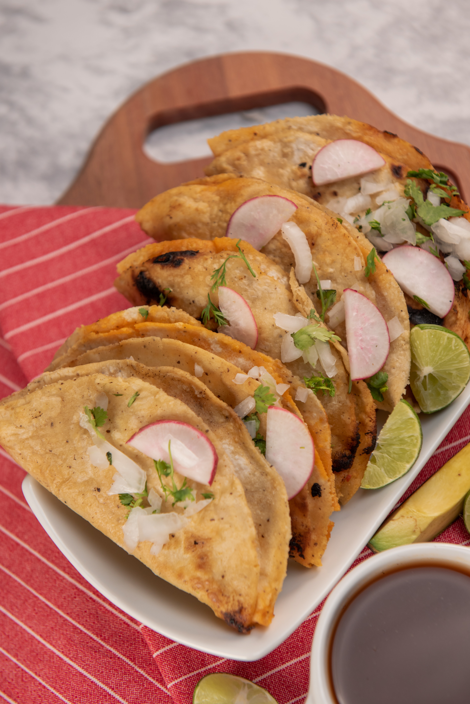

Lime Chicken Tacos

Description:
Simple and scrumptious, this taco recipe will be one of your go-tos for all eternity. Quick to make, nice caramelized flavor packed in to some perfectly browned chicken pieces.
Ingredients:
- 1 1/2 - Chopped Boneless Chicken Breasts
- 1/8 cup (child's splash) - Red Wine Vinegar
- 1-2 - Limes (split for juice)
- 1 tsp. - White sugar
- To taste - Salt
- To taste - Pepper
- 1/2 - Onion (diced small)
- 2 Cloves - Garlic
- 1 tsp. - Oregano
- Tortillas
- Toppings
Directions:
- Cover bottom of medium pan in oil. Sweat onions and garlic on medium heat for 2-3 minutes.
- Raise heat, add diced chicken. You want to brown the meat.
- Once browned, add red wine vinegar, juice of lime(s) (to taste... I like limes so I do a lot), salt, pepper, oregano, and sugar.
- Continue cooking. I like to go until the mixture starts to caramelize.
- Serve in warm tortillas w/ sour cream, tomoatoes, lettuce, and cheese.